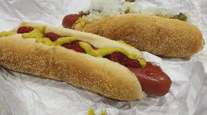
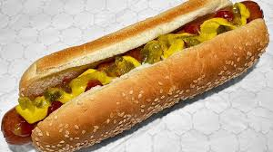

Costco Hotdog
<<<<<<< HEAD

=======

>>>>>>> 979f65d52207fb8e6056dd786fe75870d6f5f2ee
Description:
The Costco hotdog is a popular, iconic menu item known for its simplicity and satisfying taste. It features a large,
all-beef hotdog, known for its juicy, flavorful, and slightly smoky taste. The hotdog is served in a soft, slightly
toasted bun, which complements the sausage perfectly. It is often topped with basic condiments like mustard, ketchup,
onions, and relish, allowing the quality of the hotdog itself to shine through. The hotdog's appeal lies in its
no-frills approach, delivering a classic, American hotdog experience that is both hearty and affordable.
Ingredients:
- Beef (usually all-beef or a blend with seasoning)
- Salt
- Spices (such as paprika, black pepper, garlic powder, and onion powder)
- Curing agents (like sodium nitrite)
- Enriched flour (wheat flour, niacin, reduced iron, thiamine mononitrate [vitamin B1], riboflavin [vitamin B2],
folic acid)
- Water
- Sugar
- Yeast
- Oil (such as soybean or canola oil)
- Dough conditioner (like ascorbic acid or calcium propionate)
Steps:
- Use high-quality all-beef hotdog sausages. If you’re making them from scratch, season beef with salt, spices,
and curing agents, then stuff the mixture into casings and cook according to a trusted recipe
- Preheat your grill to medium heat. Grill the sausages, turning occasionally, until they are evenly cooked
and have nice grill marks, about 6-8 minutes
- Lightly toast the hotdog buns. You can do this on the grill, in a toaster, or by placing them under the
broiler for a minute or two until lightly browned
- Place each cooked hotdog sausage into a toasted bun
- Add your choice of condiments such as mustard, ketchup, relish, diced onions, or pickles